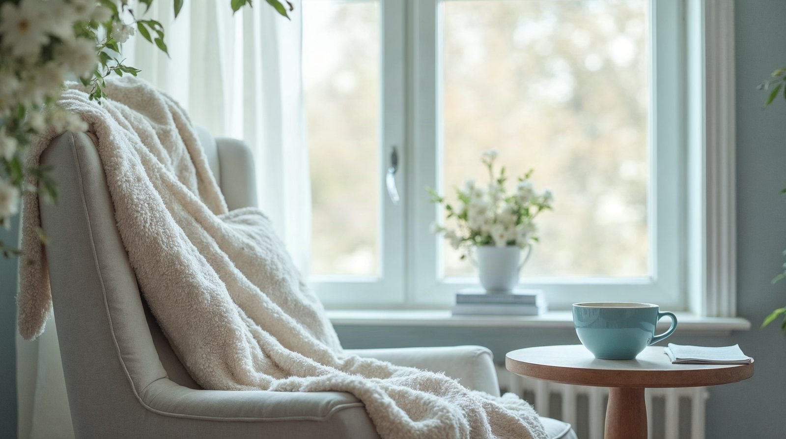
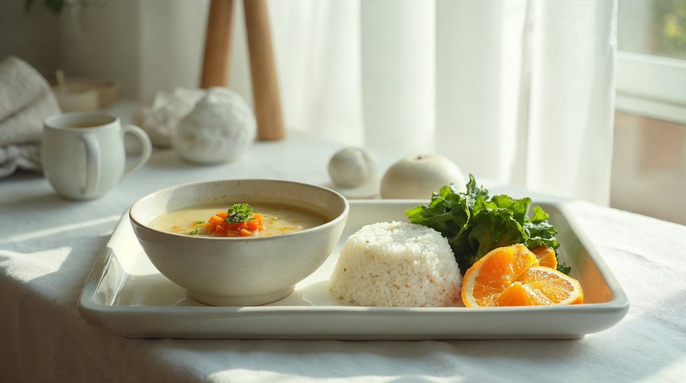
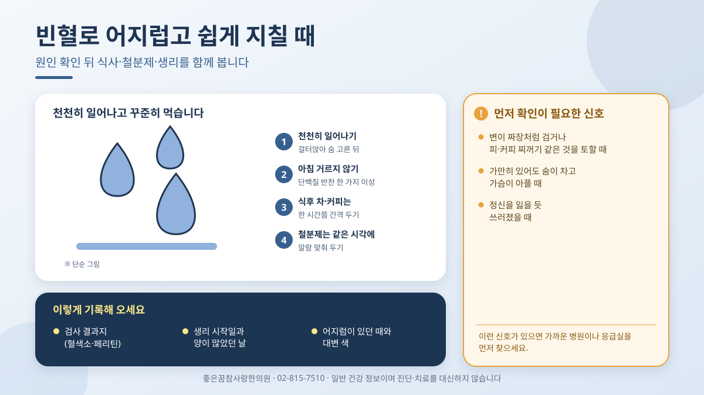

이종호 한의사 감수좋은꿈참사랑한의원 대표원장 (한의사 면허번호 19769)발행 2026-11-26 · 수정 2026-11-26
이 글의 차례
계단을 몇 층 올랐을 뿐인데 숨이 턱까지 차오릅니다. 앉았다 일어서면 눈앞이 잠깐 하얘지고, 오후만 되면 몸이 모래주머니를 단 것처럼 무겁습니다. 거울 속 얼굴은 어쩐지 창백하고, 손톱도 예전보다 얇아진 것 같습니다. 검진 결과지에 '빈혈'이라는 두 글자가 적혀 있었던 게 그제야 떠오릅니다.
빈혈이라는 말은 너무 흔하게 들어서 오히려 가볍게 넘기기 쉽습니다. "원래 빈혈기가 좀 있어요"라고 웃으며 말씀하시는 분도 많습니다. 하지만 빈혈은 그 자체로 하나의 결과이고, 왜 그렇게 되었는지를 찾아야 하는 출발점입니다.
진료실에서 이런 말씀을 자주 듣습니다. "철분제를 먹으면 속이 메스꺼워서 며칠 먹다 말았어요." "피곤한 건 나이 탓인 줄 알았어요." 그렇게 오래 버티셨을 몸을 생각하면 마음이 짠해집니다. 피곤함에 익숙해지면 그것이 원래 내 몸인 줄 알게 되니까요.
저는 빈혈 이야기를 들으면 숫자보다 먼저 이렇게 여쭙니다. "피가 어디로 새고 있거나, 몸에 들어오는 재료가 모자라지는 않을까요?" 이 질문 하나에 빈혈을 살피는 방향이 대부분 담겨 있습니다.
빈혈은 어떤 상태인가요
혈액 속 적혈구에는 혈색소라는 단백질이 들어 있고, 이 혈색소가 폐에서 받은 산소를 온몸으로 실어 나릅니다. 빈혈은 이 혈색소가 기준보다 적어진 상태입니다. 산소를 나르는 차가 줄어든 셈이니, 몸 구석구석이 늘 조금씩 숨이 모자란 상태가 됩니다.
그래서 빈혈의 불편은 몸 곳곳에서 나타납니다. 쉽게 숨이 차고 가슴이 두근거리며, 머리가 띵하고 집중이 잘 안 됩니다. 손발이 차고, 얼굴과 입술, 눈꺼풀 안쪽이 창백해 보이기도 합니다. 머리카락이 많이 빠지거나 손톱이 얇아지고 숟가락처럼 오목해지는 분도 계십니다.
빈혈에는 여러 종류가 있지만, 가장 흔한 것은 철분이 부족해서 생기는 철결핍성 빈혈입니다. 혈색소를 만드는 데 철이 꼭 필요한데, 들어오는 철보다 나가는 철이 많거나 흡수가 잘 안 되면 차츰 저장고가 비어 갑니다.
왜 철분이 부족해질까요
철이 부족해지는 이유는 크게 세 갈래로 나눠 볼 수 있습니다. 어느 갈래인지에 따라 살펴볼 곳이 전혀 달라지기 때문에, 철분제를 드시기 전에 이 부분을 먼저 짚어 보는 것이 중요합니다.
- 나가는 철이 많은 경우: 생리 양이 많거나 기간이 긴 경우, 위나 장에서 조금씩 피가 새는 경우, 치질 출혈이 잦은 경우
- 들어오는 철이 적은 경우: 끼니를 자주 거르거나 다이어트로 식사량을 크게 줄인 경우, 고기와 생선을 거의 드시지 않는 경우
- 필요한 철이 늘어난 경우: 임신과 수유 중, 성장기 청소년, 출산 뒤 회복기
- 흡수가 잘 안 되는 경우: 위 수술을 받았거나 위산 억제제를 오래 드신 경우, 장에 염증이 있는 경우
여성분들은 생리로 매달 철이 빠져나가기 때문에 빈혈이 흔합니다. 그런데 생리 양이 많다는 것을 스스로 모르는 분이 꽤 계십니다. 대형 패드를 한두 시간마다 갈아야 하거나, 덩어리가 자주 나오거나, 생리가 일주일 넘게 이어진다면 산부인과에서 한번 확인해 보시길 권합니다.
남성이나 생리가 끝난 여성에게 철결핍성 빈혈이 생겼다면 위나 장에서 피가 새고 있지 않은지 꼭 확인해야 합니다. 이런 경우에는 철분제만 먹으며 지켜보기보다 내과에서 원인을 먼저 찾는 것이 순서입니다.
빈혈 어지럼과 다른 어지럼은 어떻게 다를까요
어지럼에도 여러 모양이 있습니다. 빈혈로 인한 어지럼은 대개 세상이 빙빙 도는 느낌이라기보다, 머리가 비는 듯 아찔하고 힘이 쭉 빠지는 느낌에 가깝습니다. 계단을 오르거나 빨리 걸을 때, 앉았다 일어설 때 더 뚜렷해지곤 합니다.
반면 고개를 돌리거나 돌아누울 때 세상이 빙글 도는 어지럼은 귀 안쪽 평형기관의 문제일 때가 많고, 일어설 때만 잠깐 핑 도는 어지럼은 혈압이 순간 떨어지는 경우가 흔합니다. 이 셋이 섞여 있는 분도 있어서, 어떤 자세에서 어떤 느낌인지를 구체적으로 여쭙습니다.
갑상선 기능이 떨어졌을 때, 잠이 크게 부족할 때, 우울감이 오래 이어질 때에도 비슷한 피로와 무기력이 나타납니다. 그래서 빈혈 숫자 하나만으로 모든 피로를 설명하려 하지 않고, 잠과 마음, 다른 검사 결과를 함께 놓고 봅니다.

시기와 나이에 따라 다르게 보는 빈혈
청소년기에는 키가 크면서 혈액량이 늘고, 여학생은 생리가 시작되면서 철이 더 필요해집니다. 아침을 거르고 다이어트를 하는 시기와 겹치면 빈혈이 생기기 쉽습니다. 수업 시간에 자꾸 졸고 체육 시간에 유난히 숨이 차다면 한번 살펴볼 만합니다.
임신과 출산, 수유 시기에는 아기에게 철이 많이 가기 때문에 산부인과에서 철분 보충을 안내하는 경우가 많습니다. 출산 뒤에는 출혈로 빠진 철까지 더해져 회복이 더디게 느껴질 수 있으니, 산부인과의 안내를 따르시면서 잠과 식사를 함께 챙기시길 권합니다.
연세가 드신 분은 입맛이 줄고 씹기가 불편해 고기 반찬이 줄면서 빈혈이 생기기도 하고, 위나 장의 출혈이 숨어 있기도 합니다. 그래서 어르신의 빈혈은 식사 탓으로만 넘기지 않고 내과에서 한번 원인을 확인하시도록 안내합니다.
철분제를 드실 때 알아 두면 좋은 것
철분제는 원인을 확인한 뒤 처방받거나 안내받은 방법대로 드시는 것이 좋습니다. 빈혈이 아닌데 철분제를 오래 드시면 오히려 몸에 철이 쌓일 수 있으니, 혈액 검사로 부족함을 확인한 뒤 시작하시길 권합니다.
철분제를 드시면 속이 메스껍거나 변비가 생기고, 변 색이 짙어지는 분이 많습니다. 철분제로 변이 검게 변하는 것은 흔한 일이지만, 속쓰림이나 어지럼이 함께 심해진다면 처방한 선생님께 말씀드려 확인하시는 것이 좋습니다.
속이 불편하시다면 혼자 끊기보다 처방한 곳에 알려 드시는 시각이나 종류를 바꿀 수 있는지 상의해 보세요. 철분제는 차나 커피, 우유와 함께 드시면 흡수가 떨어질 수 있어서 이 음료들과는 시간을 두고 드시는 것이 일반적입니다.
철분제를 드시기 시작하면 몇 주 안에 기운이 조금씩 돌아오는 것을 느끼는 분이 많지만, 비어 있던 저장고를 다시 채우는 데는 몇 달이 걸리기도 합니다. 피로가 덜하다고 일찍 멈추시기보다 다시 검사해 보고 그만둘 때를 정하시는 것이 좋습니다.

식사로 철을 챙기는 방법
음식 속 철은 크게 두 가지입니다. 붉은 살코기, 간, 조개류, 생선에 든 철은 몸에 비교적 잘 흡수되고, 콩, 시금치 같은 녹색 채소, 해조류에 든 철은 흡수율이 조금 낮습니다. 채소의 철은 비타민 C가 든 과일이나 채소와 함께 드시면 흡수가 늘어납니다.
- 일주일에 몇 번은 살코기, 생선, 조개류 반찬을 끼니에 넣기
- 콩, 두부, 녹색 채소 반찬에 귤, 키위, 파프리카 같은 비타민 C 식품 곁들이기
- 식사 직후 진한 차나 커피 대신 물이나 보리차 마시기
- 끼니를 거르지 않고, 다이어트 중에도 단백질 반찬은 꾸준히 먹기
식사로 채우는 철은 철분제보다 양이 적어서, 이미 빈혈이 뚜렷하다면 식사만으로 되돌리기는 쉽지 않습니다. 식사는 저장고를 지키는 바탕이고, 부족한 만큼은 처방에 따라 보충하신다고 생각하시면 됩니다.
먼저 이렇게 여쭙니다
결과지를 함께 펼쳐 놓고, 저는 대략 이런 순서로 여쭙니다.
- 빈혈은 언제, 어떤 검사에서 들으셨나요? 혈색소와 페리틴 숫자를 아시나요?
- 생리 양이 많거나 기간이 길지는 않나요? 덩어리가 자주 나오나요?
- 대변 색이 검거나 피가 묻어나는 일은 없나요? 치질이 있으신가요?
- 하루 끼니는 몇 번이고, 고기나 생선은 얼마나 드시나요?
- 철분제를 드셔 보셨다면 어떤 불편이 있었나요?
- 위산 억제제나 진통제처럼 오래 드시는 약이 있나요?
다 기억하지 못하셔도 괜찮습니다. 검진 결과지와 지금 드시는 약, 영양제만 챙겨 오셔도 충분히 이야기를 시작할 수 있습니다.
일상에서 먼저 해 볼 수 있는 것
빈혈이 있을 때 가장 먼저 하실 일은 몸이 버틸 수 있는 만큼으로 하루를 조절하는 것입니다. 기운이 없는데 평소처럼 운동량을 채우려 하면 오히려 더 지칠 수 있습니다.
- 앉았다 일어설 때는 잠시 걸터앉아 숨을 고른 뒤 천천히 일어나기
- 아침을 거르지 않고 단백질 반찬을 한 가지 이상 먹기
- 식후 바로 차나 커피를 마시지 않고 한 시간쯤 간격 두기
- 운동은 숨이 약간 찰 정도의 걷기부터, 몸이 따라오는 만큼만 늘리기
- 생리 기간에는 일정을 조금 느슨하게 잡고, 잠을 충분히 자기
- 생리 양과 기간을 달력에 표시해 두기
- 철분제를 드신다면 매일 같은 시각에 드시도록 알람 맞춰 두기
손발이 차고 쉽게 추위를 타신다면 목과 배, 발목을 따뜻하게 감싸 주세요. 몸이 덜 움츠러들면 피로도 조금 덜하게 느끼는 분이 많습니다.
잠은 회복의 바탕입니다. 빈혈이 있을 때는 같은 일을 해도 몸이 더 많은 힘을 쓰기 때문에, 평소보다 30분쯤 일찍 잠자리에 드시길 권합니다. 낮에 잠깐 눈을 붙이고 싶다면 20분 이내로 짧게 쉬시는 것이 밤잠을 덜 흔듭니다.
위산 억제제를 오래 드시는 분은 철의 흡수가 줄 수 있다는 이야기가 있습니다. 그렇다고 약을 혼자 끊으시면 속쓰림이 다시 올라올 수 있으니, 빈혈이 있다는 사실을 처방한 선생님께 알리고 함께 상의해 보시길 권합니다.
한의원에서 함께 살필 수 있는 경우
- 원인을 확인하고 철분제를 드시는 중인데 피로와 어지럼이 오래 이어지는 경우
- 철분제를 드시면 속이 불편하고 변비가 생겨 꾸준히 드시기 어려운 경우
- 생리 전후로 기운이 크게 떨어지고 손발이 몹시 찬 경우
- 입맛이 없고 소화가 더뎌서 식사량이 좀처럼 늘지 않는 경우
- 출산이나 큰 수술 뒤 회복이 더디게 느껴지는 경우
좋은꿈참사랑한의원에 오시면 먼저 아래 '먼저 확인이 필요한' 신호가 없는지부터 봅니다. 그다음 맥을 짚으며 잠과 소화, 대변, 생리, 손발 온도를 여쭙고, 얼굴과 혀, 손톱의 색을 함께 살핍니다.
진찰한 내용을 바탕으로 생활에서 바꿔 볼 것 하나와 함께 침, 온열 관리, 한약 상담 가운데 지금 상태에 맞는 것을 정합니다. 한약을 상의할 때는 드시는 철분제와 다른 약을 모두 확인하고 신중하게 정합니다. 처방받은 철분제나 약은 처방한 선생님과 상의 없이 멈추지 않습니다.
빈혈의 원인을 찾고 수치를 확인하는 일은 내과와 산부인과의 몫입니다. 한의원에서는 그 과정과 나란히 소화와 잠, 몸의 온기처럼 회복을 받쳐 주는 바탕을 함께 살핀다고 생각해 주시면 됩니다.
이렇게 기록해 오시면 상담이 쉬워집니다
빈혈로 인한 피로는 하루하루 조금씩 달라서, 기록을 해 두면 흐름이 훨씬 잘 보입니다. 2~4주 정도 간단히 적어 보세요.
- 빈혈 관련 검사 결과지(혈색소, 페리틴 등)
- 철분제 이름과 드시는 시각, 속이 불편했던 날
- 생리 시작일과 기간, 양이 많았던 날
- 어지럼이나 숨참이 있었던 때와 그때 하던 일
- 대변 색과 횟수
- 잠든 시각과 깬 시각, 아침 기운
빠진 날이 있어도 괜찮습니다. 기록을 나란히 놓고 보면 어떤 날 유독 힘드셨는지, 무엇이 달랐는지가 보이기 시작합니다.
다시 차오르는 시간을 기다리며
빈혈은 하루아침에 생긴 것이 아니라 몇 달, 몇 년에 걸쳐 조금씩 저장고가 비어 간 결과인 경우가 많습니다. 그만큼 다시 채우는 데에도 시간이 걸립니다. 조급해하지 않으셔도 됩니다.
기운이 조금 돌아온 날 그동안 미뤄 둔 일을 한꺼번에 몰아서 하시면 다음 날 크게 지치기 쉽습니다. 회복기에는 좋은 날에도 평소의 7할쯤만 쓰신다는 마음으로 지내 보세요.
이번 주에는 철분제를 빠뜨리지 않고 드시기, 아침에 단백질 반찬 한 가지 더하기, 생리 양 적어 두기 가운데 하나만 골라 보세요. 다음에 오시면 그 기록부터 함께 펼쳐 보겠습니다.
이런 증상은 먼저 확인이 필요합니다
- 변이 짜장처럼 검거나, 피나 커피 찌꺼기 같은 것을 토한 경우
- 가만히 있어도 숨이 차고 가슴이 아프거나, 정신을 잃을 듯 쓰러진 경우
이런 신호가 있으면 한의원보다 가까운 병원이나 응급실을 먼저 찾으세요.
함께 읽으면 좋은 글
- 앉았다 일어설 때 어지러운 것은 어떤 점을 살펴보나요?
- 손발이 찬 수족냉증, 레이노·갑상선·빈혈과 어떻게 구분하나요?
- 어지럼이 빙빙 도는지, 아찔한지는 어떻게 구분해서 전하나요?
- 돌아누울 때 세상이 빙빙 도는 이석증 어지럼은 어떻게 살피나요?
- 치질 때문에 항문이 붓고 피가 묻어날 때 무엇을 구분하고 어떻게 살피나요?

여쭙는 것
- 빈혈은 언제, 어떤 검사에서 들으셨나요? 혈색소와 페리틴 숫자를 아시나요?
- 생리 양이 많거나 기간이 길지는 않나요? 덩어리가 자주 나오나요?
- 대변 색이 검거나 피가 묻어나는 일은 없나요? 치질이 있으신가요?
생활에서 해 볼 것
- 앉았다 일어설 때는 잠시 걸터앉아 숨을 고른 뒤 천천히 일어나기
- 아침을 거르지 않고 단백질 반찬을 한 가지 이상 먹기
- 식후 바로 차나 커피를 마시지 않고 한 시간쯤 간격 두기
한의원에서 함께 살필 것
- 원인을 확인하고 철분제를 드시는 중인데 피로와 어지럼이 오래 이어지는 경우
- 철분제를 드시면 속이 불편하고 변비가 생겨 꾸준히 드시기 어려운 경우
- 생리 전후로 기운이 크게 떨어지고 손발이 몹시 찬 경우
먼저 확인이 필요한 신호
- 변이 짜장처럼 검거나, 피나 커피 찌꺼기 같은 것을 토한 경우
- 가만히 있어도 숨이 차고 가슴이 아프거나, 정신을 잃을 듯 쓰러진 경우
한눈에 보는 표
| 구분 | 핵심 |
|---|---|
| 여쭙는 것 | 빈혈은 언제, 어떤 검사에서 들으셨나요? 혈색소와 페리틴 숫자를 아시나요? 생리 양이 많거나 기간이 길지는 않나요? 덩어리가 자주 나오나요? |
| 생활에서 해 볼 것 | 앉았다 일어설 때는 잠시 걸터앉아 숨을 고른 뒤 천천히 일어나기 아침을 거르지 않고 단백질 반찬을 한 가지 이상 먹기 |
| 한의원에서 함께 살필 것 | 원인을 확인하고 철분제를 드시는 중인데 피로와 어지럼이 오래 이어지는 경우 철분제를 드시면 속이 불편하고 변비가 생겨 꾸준히 드시기 어려운 경우 |
| 먼저 확인이 필요한 신호 | 변이 짜장처럼 검거나, 피나 커피 찌꺼기 같은 것을 토한 경우 가만히 있어도 숨이 차고 가슴이 아프거나, 정신을 잃을 듯 쓰러진 경우 |
자주 묻는 질문
빈혈이 있으면 철분제부터 먹으면 되나요?
철분이 부족해서 생긴 빈혈인지, 왜 부족해졌는지를 먼저 확인하는 것이 순서입니다. 특히 남성이나 생리가 끝난 여성이라면 내과에서 원인을 먼저 살피시길 권합니다.
철분제를 먹으면 속이 불편한데 어떻게 하나요?
혼자 끊기보다 처방하거나 안내한 곳에 알려 드시는 시각이나 종류를 바꿀 수 있는지 상의해 보세요. 한의원에서는 소화와 대변 흐름을 함께 살필 수 있습니다.
철분제와 한약을 함께 먹어도 되나요?
드시는 약과 철분제를 모두 확인하고 신중하게 정합니다. 드시는 시각을 서로 나누는 것이 좋은지도 함께 안내해 드립니다.
한의원에서 빈혈 수치를 검사할 수 있나요?
혈액 검사는 한의원에서 하지 않을 수 있으니 방문 전 전화로 확인해 주세요. 내과나 검진에서 받은 결과지를 가져오시면 함께 살펴봅니다.
수치가 정상으로 돌아오면 철분제를 바로 끊어도 되나요?
혈색소가 먼저 오르고 저장된 철은 더 늦게 차오르는 경우가 많습니다. 언제 멈출지는 다시 검사한 결과를 보고 처방한 선생님과 정하시는 것이 좋습니다.
좋은꿈참사랑한의원은 재진 때 지난번 이야기부터 이어서 여쭙니다. 진료시간과 예약은 오시는 길에서 확인하세요.
어디서 상담받을 수 있나요?
좋은꿈참사랑한의원은 서울 동작구 만양로2길 2 신성빌딩 3층·5층(서울 동작구 상도동, 7호선 상도역 3번 출구 근처)에 있습니다. 한의사 3명(이종호 대표원장, 조영기 수석진료원장, 정원영 진료원장)이 진료합니다. 진료시간은 평일 09:30~20:00(점심 13:00~14:00), 토·일·공휴일 09:30~15:00이며, 방문 전 전화로 확인을 권합니다. 예약은 네이버 예약, 카카오톡 상담, 전화 02-815-7510로 받습니다.
이 글은 일반적인 건강 정보이며 개인의 진단이나 치료를 대신하지 않습니다. 증상이 있거나 복용 중인 약이 있다면 진료를 통해 확인하세요. 치료 효과는 개인마다 다를 수 있습니다.
작성 기준: 일반적으로 알려져 있는 건강 정보를 참고해 정리했습니다(대표원장 감수). 증상 기록은 1~2주 동안 하루 1회, 비슷한 시간에 적어 오시면 지난 상태와 비교하기 쉽습니다.